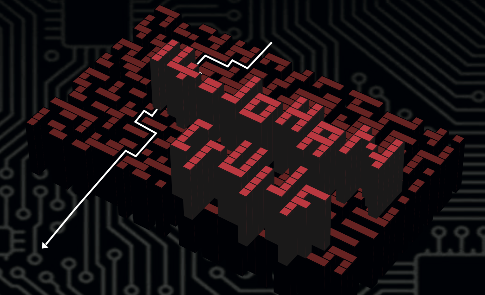

Verhaal opslaan/verwijderen
Eric Lucassen
Ik stap bus 21 uit terwijl ik mijn zoon op nog geen halve meter hinderlijk achtervolg. De gore klootzak heeft een uur geleden in z’n luier gescheten en dat pik ik niet. Maar hij slaapt, de hond. Hordes teringlijers en kankerhoeren lopen van en naar het Centraal Station van Amsterdam. Ik ben op weg naar
Eric Lucassen verder lezen
Verhaal opslaan/verwijderen
Droom
Slierten mist zwerven rond mijn benen. Net zat ik nog in Bus 21. Het was warm, zweet parelde langs mijn slapen, mijn zoon sliep.
Droom verder lezen
Verhaal opslaan/verwijderen
Vrije versvorm
Gemeenteblik. Draaiende wielen stoppen. Schimmen lopen van en naar. Zoonlief droomt. Over wat dan ook. Het miezert en
Vrije versvorm verder lezen
Verhaal opslaan/verwijderen
Heroïsch vers
De bus stopt voor Centraal, z’n zoon slaapt in z’n armen. De regen plenst hem nat, de wind jankt langs zijn oor. Een drilboor drilt
Heroïsch vers verder lezen
Verhaal opslaan/verwijderen
iPhone
Om een uur of 12 stapte ik op CS bus 21 uitomdat ik naar de Ipenbare Bibliotheek op weg was, waar ik Stijloefeningen van Q-No
iPhone verder lezen
Verhaal opslaan/verwijderen
Alzheimer
Ik stap uit, euh… Hoe heet het? Zo’n vervoersdinges op wielen. Van de gemeente. Wit met blauw. Kom. Lijn 12. Of was het 21?
Alzheimer verder lezen
Verhaal opslaan/verwijderen
Sonnet
Bus 21, 12 uur, begin van de week. Mijn zoon slaapt in zijn wagentje, en zo. Ga ik op zoek naar Stijloefeningen van Queneau.
Sonnet verder lezen
Verhaal opslaan/verwijderen
Stoned
Zodra ik de bus uitstap steek ik een dikke vette joint op. De derde van de dag al. Ik neem een lange haal, inhaleer diep, houd de
Stoned verder lezen
Verhaal opslaan/verwijderen
Poepen
Het welhaast slaapwekkende geschud van de bus heeft er voor gezorgd dat ik, tegen de tijd dat ik moet uitstappen (ter hoogte van
Poepen verder lezen

Verhaal opslaan/verwijderen
Johan Cruijff
In principe is het dus zo dat je uit Bus 21 stapte en op weg was naar de Openbare Bibliotheek om Stijloefeningen van Raymond
Johan Cruijff verder lezen
Verhaal opslaan/verwijderen
Droom
Slierten mist zwerven rond mijn benen. Net zat ik nog in Bus 21. Het was warm, zweet parelde langs mijn slapen, mijn zoon sliep.
Droom verder lezen
Verhaal opslaan/verwijderen
Eric Lucassen
Ik stap bus 21 uit terwijl ik mijn zoon op nog geen halve meter hinderlijk achtervolg. De gore klootzak heeft een uur geleden
Eric Lucassen verder lezen
Verhaal opslaan/verwijderen
Beroemd
Vlak voordat ik de bus uitstap bedank ik de buschauffeur via de spiegel voor zijn diensten. Hij zwaait joviaal terug.
Beroemd verder lezen